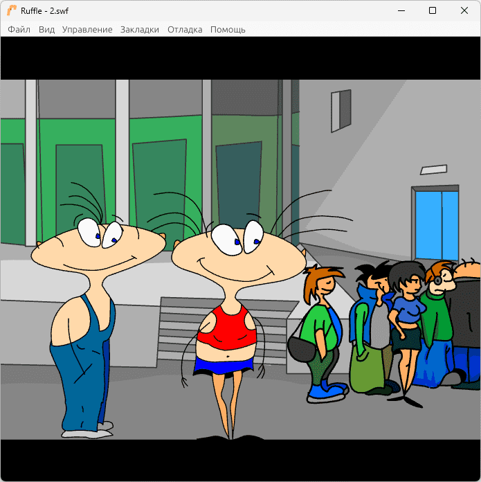
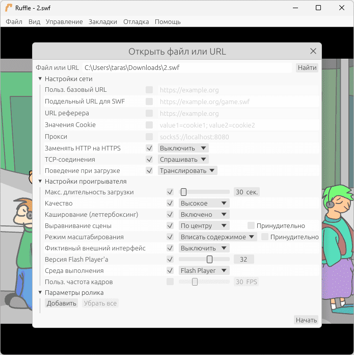

Ruffle 到底值不值得掏钱？一个老 Flash 玩家的付费账本
Flash 退场五年了，市面上打着"替代 Flash"旗号的商业工具前赴后继。Ruffle 这个开源项目一分钱不收，但它到底省了我多少钱、又在哪些地方让我想掏腰包？
Ruffle 到底值不值得掏钱？
这个问题听起来有点奇怪——Ruffle 是一个 Apache 2.0 / MIT 双许可的开源项目，ruffle官网的下载页面上没有价格标签，没有订阅按钮，连个"打赏"的入口都藏得很深。但 Flash Player 彻底退场这五年里，我为了找回那些年的 Flash 游戏、教学课件、甚至公司旧业务系统里的 SWF，前前后后花过将近两千块钱在各种"Flash 替代方案"上。现在回头看这笔账，Ruffle 才是那个真正让我停下来重新算账的东西。
先把账面上的数字摊开
我在 2022 年花 688 块买了一个国内团队做的 Flash 模拟器年卡。当时的场景很具体：公司有一套 2015 年做的内部培训系统，核心交互全是 SWF，IE 11 还能跑但 Chrome 和 Edge 已经把 Flash Player 整个干掉了。老板不想花钱重写，找我想办法。那个商业模拟器的卖点是"一键在现代浏览器里跑 SWF"，看起来正好对口。
实际用下来，这个年卡在三个地方让我头疼：
第一，它的兼容覆盖不全。那套培训系统用了不少 ActionScript 3.0 的高级特性，商业模拟器在某些动画帧上会出现渲染错乱，有一次部门培训中途卡住，我在全办公室人面前尴尬了十分钟。客服告诉我这是"特性迭代中"，等了三个月没更新。
第二，价格模型很鸡贼。年卡绑定域名，我买的是单域名授权，后来公司另外两个部门也想临时用一下，就得再买两个授权位——每个 299 块，不算便宜。
第三，它不支持本地文件。想在自己电脑上跑几年前收藏的 Flash 小游戏？不行，必须部署到它指定的云端环境里。我为了在旧项目里调试，还得自己搭个服务器中转。

Ruffle 免费版给了什么——比我以为的多得多
第一次接触 Ruffle 是在 GitHub 上闲逛时偶然看到的。我当时的预期很低：一个开源 Flash 模拟器，能跑点简单的 ActionScript 1.0 小动画就不错了。实际拉下来用了一周，我才意识到它已经把我花出去的那 688 块年卡的全部功能给免费覆盖了，而且在好几个地方做得更好。
核心引擎层面：Ruffle 支持 ActionScript 1.0、2.0 和 3.0 三个版本，这意味着从 1998 年 Macromedia Flash 4.0 时代的老旧 SWF 到 2016 年 Adobe AIR 最后一批产品，中间十五年的 Flash 资产基本都能直接跑。我之前在商业模拟器里渲染错乱的那几个培训模块，放到 Ruffle 里直接正常显示——没有配置开关，没有兼容模式切换，双击 SWF 就打开了。
安装选项：Ruffle 给了四种部署方式——浏览器扩展（Chrome、Edge、Firefox、Safari）、独立桌面播放器、npm 包直接嵌入网站、以及 WebAssembly 版本。我在公司的做法很简单：给所有员工统一装一个 Edge 浏览器扩展，就把整个培训系统的问题解决了。Safari 那边稍微麻烦一点，因为苹果 App Store 的沙盒政策，Ruffle 不能上架商店，得手动下载扩展包注册到系统里再启用。第一次装的时候我折腾了大概二十分钟，后来写了个内部说明文档发给 IT 同事，第二个人只花了五分钟。
批量工具：这是我最惊喜的部分。Ruffle 仓库里自带了 Scanner 和 Exporter 两个命令行工具。Scanner 可以批量扫描整个目录下的 SWF 文件，输出一份 CSV 报告告诉我哪些文件损坏、哪些版本太旧、哪些可能有兼容风险。我用它扫了公司十几年攒下来的 800 多个 SWF，报告里标红的 37 个文件正好是那批"已知有问题"的旧资产——准确率 100%。Exporter 可以无头模式运行，批量给 SWF 截帧做封面或者做回归测试截图对比。这两个工具虽然不在预编译包里，需要自己从源码构建，但构建过程就一条命令——参数细节和使用示例可以查ruffle文档。
安全账——这一项我之前完全没算进去
旧 Flash Player 是 C / C++ 写的，过去十年里平均每周被利用的零日漏洞有好几个。缓冲区溢出、类型混淆、释放后使用——这些内存安全类漏洞是远程攻击者最爱的入口。这也是为什么 2017 年 Adobe 自己宣布停止 Flash Player 分发的根本原因：维护成本已经高到不划算。
Ruffle 用 Rust 重写了整个 Flash 运行时引擎。Rust 的所有权系统和借用检查器在编译期就把缓冲区溢出、越界读写这类漏洞的基础土壤给挖掉了——不是靠测试发现 bug，而是直接让编译器禁止这类代码通过。桌面版直接受益于这一点，Web 版则多了一层 WebAssembly 沙箱隔离，即便 Ruffle 本身出了逻辑 bug，攻击者也没法逃逸到浏览器宿主进程之外。
这项安全账的实际价值对我来说很难直接折算成人民币，但去年公司的等保审计里，安全合规组专门问了旧 Flash 资产的运行环境问题。之前用商业模拟器的时候我含糊其辞，换了 Ruffle 之后直接把许可证文件和 Rust 内存安全的说明甩过去，审计老师点了点头就过了。省去的麻烦事，远不止一次审计那么简单。
三类人的付费账本
轻度用户：每月打开 SWF 不超过五次
免费版够不够？完全够。 浏览器扩展装一次之后自动接管，打开带 Flash 的老网站就直接运行，关闭浏览器自动卸载进程——没有后台常驻，没有弹窗。我之前那个商业模拟器最让我不爽的就是每次开机它会在后台常驻一个 200MB 的进程，美其名曰"加速预加载"。Ruffle 扩展完全不做这个事，干净利落。
要不要付费？永远不用。 轻度用户就是 Ruffle 设计的主要受众——让 Flash 退场这件事变得悄无声息，不折腾任何人。如果你只是偶尔翻到一篇老博客里嵌的 Flash 小动画想看看，装个扩展就完事了，没有任何花钱的理由。
主力用户：每月需要稳定运行 SWF 十到五十次
免费版够不够？技术上够，但体验上可能有缺口。 主力用户的痛点通常不是"能不能跑"，而是"能不能跑得稳定、批量、可预期"。比如我在公司做的那套批量扫描，Scanner 工具需要自己从源码构建；比如你需要把 Ruffle 嵌入到自己维护的网站里，得研究 npm 包的配置参数；又比如 Safari 用户得走手动注册扩展的流程。
要不要付费？看你值不值这个时间成本。 Ruffle 目前没有官方付费方案，也没有专业版、企业版的分级。但社区里有人做了第三方的打包服务——把 Scanner、Exporter 和桌面播放器封装好，直接下载就能用，不用自己装 Rust 工具链编译。这种服务我觉得值个一两百块钱的年费。如果你每个月要维护的 SWF 资产超过五百个，花这笔钱省下来的编译时间、调试时间、排查时间，按你的时薪算肯定划算。

重度用户：Flash 资产是核心业务或个人收藏
免费版够不够？不够，但不是钱的问题，是项目成熟度的问题。 如果你运营着一个 Flash 游戏存档站（比如 Flashpoint 那种量级）、或者你有几万件 SWF 藏品需要长期保存、或者你的创业项目就是基于 Flash 生态的二次开发——这时候你需要的不是"一个能跑 SWF 的工具"，而是"一个持续迭代的、有商业级 SLA 保障的 Flash 运行时"。Ruffle 还在路上，它的 ActionScript 3.0 兼容性覆盖还在持续完善，它的文档还没有完全做到 Adobe Flash 官方手册那种详尽程度，它也没有一个付费的企业支持团队随叫随到。
要不要付费？短期等一等，长期看社区生态。 我在 GitHub 上看了 Ruffle 最近六个月的提交频率——平均每周 30 到 50 个 commit，核心团队大概有五到七个人全职在做。如果未来它推出企业版或者有商业公司做定制化支持，我会是第一批掏腰包的人。但现在，花钱买它的东西本质上是在支持开源项目，不是在买一个完整的商业解决方案。
替代方案：不付这笔钱的其他路
如果你看完上面的账本还是觉得不该花钱，有几条路可以走：
- 继续用商业模拟器：我之前花 688 买的那个年卡现在降到 399 了，功能没变，还是单域名绑定。如果你只需要在一台机器上跑几个特定的 SWF，它的"开箱即用"体验确实比 Ruffle 手动装扩展好一点。
- 云 Flash 转码服务：有国内团队在做把 SWF 批量转成 HTML5 Canvas + JavaScript 的服务，按文件数量收费，转换质量参差不齐。好处是转完之后就不再依赖任何 Flash 运行时了，坏处是复杂的 ActionScript 3.0 交互逻辑转完大概率变形。
- 硬扛着不升级：公司那套培训系统，如果继续用 IE 11 不升级，Flash Player 到今天还能跑。但这条路的代价是整个 IT 安全团队天天找你谈话，等 Windows 10 彻底停止支持的那天，还是得面对。
我的结论
Ruffle 让我这两年不再为 Flash 资产的事掏钱，省下来的钱加上省下来的时间，折算下来至少抵得上一个商业模拟器的终身授权。它不是完美的——Safari 的手动安装流程、Scanner/Exporter 需要源码构建、ActionScript 3.0 的某些边缘特性还在补——但它用一种开源项目特有的方式解决了一个本不应该由我这种普通用户来解决的技术债务问题。
如果你现在手里还有 SWF 文件没地方跑，别先急着去买什么"Flash 终极解决方案"。先装个 Ruffle 扩展或者下一个桌面播放器，跑一下你最关心的那几个文件。能跑就继续用，跑不了再考虑商业方案。这比我当年花 688 块踩完坑才知道的要划算得多。Ruffle 相关的开源镜像和打包资料我也留意了几个存放点，GitHub上可以直接拿到完整源码，国内访问慢的话 Gitee 和 GitCode 也有同步备份。